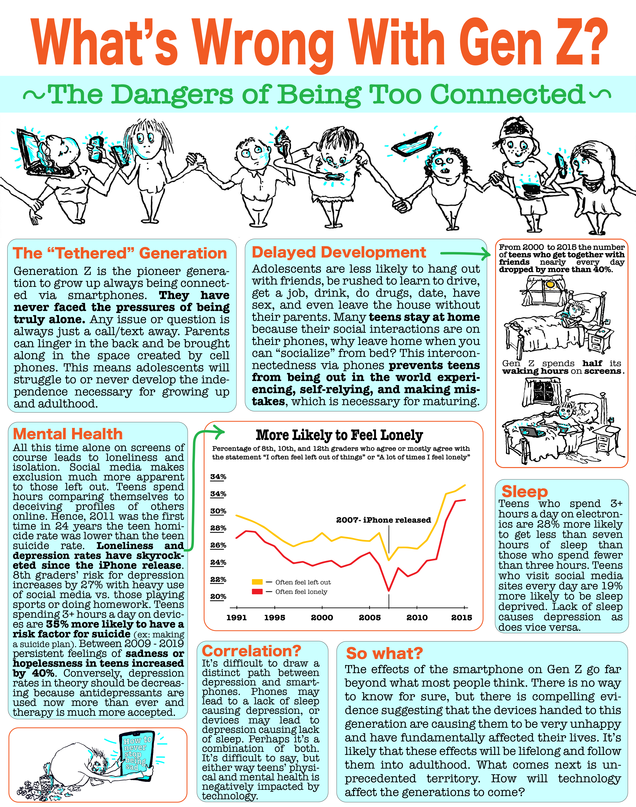
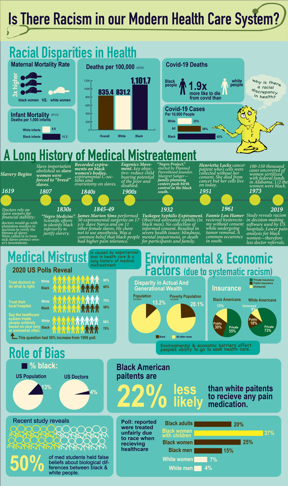

Infographic about the effects of technology on humans.
Designed digitally on Adobe illustrator, hand drawings colored digitially. 2022.

Infographic about racism in health care.
Designed digitally on Adobe illustrator, hand drawings colored digitially. 2022.